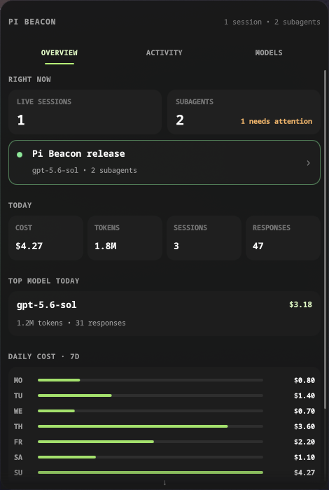

01
Keep every session visible
See idle, running and waiting sessions from one compact desktop surface.
Live observability for Pi
Pi Beacon brings main sessions, subagents, context, tokens and daily cost into Waybar and Quickshell. Everything stays on your machine.
Install Pi BeaconOpen source. Local only. No telemetry.

Stay oriented
01
See idle, running and waiting sessions from one compact desktop surface.
02
Surface waiting prompts and child attention states before background work disappears.
03
Use live context, token and cost values directly from Pi’s in process state.
04
Consume the public snapshot contract or reshape the maintained Quickshell frontend.
Your agents should not disappear
inside terminal tabs.
Keep
every Pi session in sight.
Three clear layers
Step 1
The TypeScript extension writes atomic local snapshots from Pi lifecycle events.
Step 2
Pydantic validates the contract while SQLModel resumes each JSONL file from its saved offset.
Step 3
Waybar shows the signal. Quickshell opens the full view. Your own client can use the same JSON.
Built in the open
Pi extension → live bridge
Pi JSONL → async SQLite
local SSE → any frontendFree and local
Paste one command. The installer asks whether to install, update or uninstall, then offers the relevant desktop integration choices.
curl -fsSL
https://raw.githubusercontent.com/andres-ortizl/pi-beacon/v1.1.0/install.sh
| sh
The same script installs and uninstalls Pi Beacon. It detects
Quickshell, asks which configuration to use, preserves local data by
default and requires explicit confirmation before purge. Later,
pi-beacon update installs the newest release and
refreshes every tracked integration. Automation flags remain available
through --help.
Questions answered
No. It reads local Pi files and runtime state without uploading them. It has no telemetry, opens no TCP port and serves only a private Unix socket. Optional release checks request only public version metadata from GitHub.
The historical cache watches changes and validates the saved byte offset. Set history_enabled to false for live-only operation.
Yes. The extension publishes each open session with its state, model, context and usage.
Yes. It reads the documented lifecycle artifacts created by pi subagents.
Yes. Freedesktop notifications are enabled by default. The bundled completion sound is optional.
No. The JSON snapshot and Waybar output work without Quickshell.
Yes. The driver knows nothing about the frontend. Use the snapshot API, provide another theme or copy and reshape the QML component.
Version 0.1 targets Linux desktops. The Python snapshot contract remains independent from Waybar and Quickshell.
Remove the Pi package, uninstall the uv tool and delete the optional local cache.
Ready when Pi is